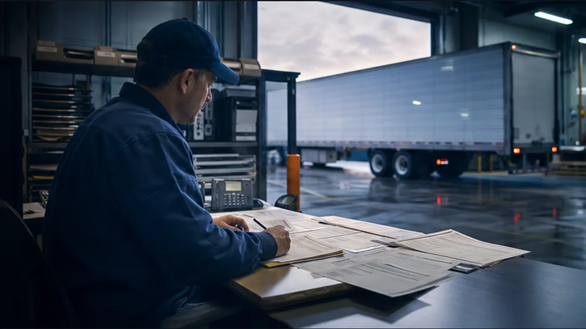

Assignment visibility
See who is assigned and what still needs review.
Keep customer context, driver and equipment assignment, readiness state, and the next operational handoff together.
Continue in the portal →Assignment Center
Assign the driver, tractor, and trailer, then confirm readiness before the load moves.
Assigned resources
Dispatch-ready blockedDriver, tractor, trailer

DriverJohn Carter - DRV-001
CDL, medical, MVR, DQF, and dispatch eligibility are current for this assignment.
- Approved quote
- Calculating
- Tractor
- TR-4812 - reefer telemetry ready
- Trailer
- RF-2207 - pre-cool and seal record required
- Owner
- S. Turner, dispatch review